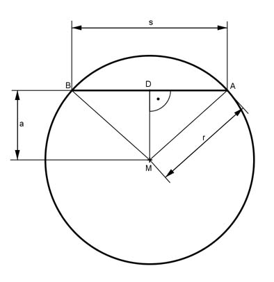

Pythagoras Aufgabe 52 Berechnen Sie s in cm, wenn r = 4 cm und a = 2 cm.  s DA = --- 2 Satz von Pythagoras im Dreieck MAD: s r² = a² + (---)² | - a² 2 s (---)² = r² - a² = 4² - 2² = 16 - 4 = 12 2 s² ---- = 12 *4 4 s² = 48 cm² |√ s = 6,9 cm